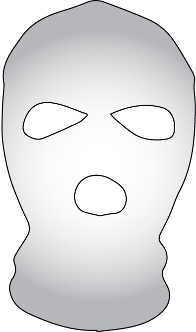
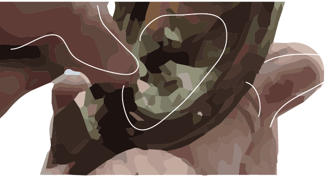

  <section class="longread" id="insideamerica">
    <div class="articlewrapper">
      <div id="title">
        <h3>AQ Chef <span>presents</span></h3>
        <h1>Car Bombs Inside America</h1>
        <div id="sticker">OSJ Bomb School</div>
        
      </div>

      <div class="textwrapper">
        <h3 id="firsthead">INSPIRE MAGAZINE’s goal is to empower Muslim <a href="https://www.google.com/search?q=kid+playing+in+park+stock+photo&espv=2&biw=1138&bih=676&source=lnms&tbm=isch&sa=X&ved=0ahUKEwilkYXorr3SAhVE5GMKHU4YDJgQ_AUIBigB" target="_blank">youth</a>. And what is empowerment without being strong, powerful and intelligent? In this section, we give you strength, power and intelligence. Believe me, using car bombs gives you all that.</h3>
        <p>
          It is absolutely simple. And we will make it simpler for you biidhnill&amacr;h, so that every Muslim, who loves All&amacr;h and His Messenger, and wants to accelerate Islam’s victory, becomes prepare to make, even if this is the  rst military material his eyes has set on.
        </p>
        <div class="imagewrapper">
          
          
        </div>

        <p>
          <p>This recipe gives you the ability to make a car bomb even in countries with tight security and surveillance. The reason<br>is: primary materials easily available and they do not raise suspicion. These materials are not explosives in nature. But after you have assemble and prepare them, they become a bomb ready for destruction, biidhnill&amacr;h.<br>This type of car bomb is not usually used to destroy buildings, but is very effective in killing <a href="https://www.amazon.com/Brief-History-Neoliberalism-David-Harvey/dp/0199283273" target="_blank">individuals</a><br>The merit of this method is that you can prepare a car bomb in a few hours during the availability of the primary materials. So there is less worry about your personal security.<br><br>
          <span class="arephemph">My Muslim brother, before you start reading the instructions, remember that this type of operation if prepared well and an appropiate target is chosen and Allah decrees success for you, history will never forget it. It will be recorded as a crushing defeat on the enemies of Islam.</span></p>
        </p>

        <div class="imagewrapper">
          
        </div>

        <h2>THE GENERAL IDEA:</h2>

        <p>We are going to mix two gases; one an oxidizer, another a fuel, in one sealed container that will change the normal combustion of the two materials into an explosive combustion. The explosion will start as soon as a  ame emitted from a torch comes in contact with the gas that will burn rapidly under very high pressure.</p>

      </div>

      

      <div class="three_vertical_column">
        <div class="left">
          <h3>WHAT YOU WILL NEED</h3>
          <ul>
            <li>• Cooking gas cylinders (6 or more)</li>
            <li>• Oxygen gas cylinder (full)</li>
            <li>• Barometer (suiting the cooking gas cylinder)</li>
            <li>• Connecting nut and pipe</li>
            <li>• 6 decoration lamps</li>
            <li>• Match</li>
            <li>• Epoxy</li>
            <li>• Tissue</li>
            <li>• Battery (12v or more)</li>
            <li>• Wire</li>
          </ul>
        </div><div class="middle">
          <div class="allwrapper">
            <div class="materialwrapper" id='imagelist'><span>epoxy</span></div>
            <div class="materialwrapper" id='imagelist'><span>connecting nut</span></div>
            <div class="materialwrapper" id='imagelist'><span>decoration lamp</span></div>
            <div class="materialwrapper" id='imagelist'><span>cooking gas cylinder</span></div>
            <div class="materialwrapper" id='imagelist'><span>oxygen gas cylinder</span></div>
            <div class="materialwrapper" id='imagelist'><span>barometer</span></div>
          </div>

        </div><div class="right">
          <h3>Pressure Units</h3>
          <p>The standard atmosphere that we live in is a unit of pressure.<br><br>
            The standard atmosphere is almost equal to one bar (1 bar &#8776; 1 atm).<br><br>
            In this procedure we are going to use bar as the standard pressure unit for the gas cylinders.<br><br>
            When you come across any other unit in your barometer e.g. <a href="https://www.boundless.com/chemistry/textbooks/boundless-chemistry-textbook/gases-5/properties-of-gases-50/si-units-of-pressure-253-1861/" target="_blank">Pascals</a>, kiloPascals or psi, convert it into bar.<br><br>
            Conversion is very simple, all you have to do is use a converter in your computer OS calculator.<br><br>
            A cooking gas cylinder can sustain up to 12 bars.<br><br>
            An oxygen cylinder can sustain up to 135 bars.<br><br>
            &lsquo;kg/cm^2&rsquo; is the same as atm (atmosphere).</p>
        </div>
      </div>

      <div class="textwrapper">
        <h2>OPERATIONAL IDEA:</h2>
        <div class="imagewrapper">
          
        </div>
        <p>

          Pure &lsquo;oxygen&rsquo; was used as the oxidizing gas, cooking gas &lsquo;propane&rsquo; as the fuel, and cooking gas cylinder as the sealed container.<br><br>
          &bull; An amount of gas was discharged from the cooking gas cylinder.<br><br>
          &bull; The highly pressurized oxygen cylinder was connected to the cooking gas cylinder.<br><br>
          &bull; When the safety valves of both the cylinders were opened, oxygen gas moved into the cooking gas cylinder directly. This was caused by pressure difference.<br><br>
          &bull; The pressure inside the oxygen cylinder was very high compared to that inside the cooking gas cylinder<br>
          &bull; We know that gas moves from a high pressure region to a lower pressure region.

        </p>

        <h2>PRESSURE DIFFERENCE:</h2>
        <p>While the tap is closed, the pressure in the yellow balloon is zero, while the pressure in the red balloon is one. But when we open the tap, gas moves from the high pressure region (red balloon) to the low pressure region (yellow balloon) in such the pressures in the two balloons become equal.</p>
        <div class="imagewrapper">
          
          
        </div>
        <h2>BAROMETERS:</h2>
        <p>
          &bull; There are different types of barometers, some measure up to 11 bars, others up to 280 bars, and others in between. Barometers used to measure tire pressure usually measure up to 11, 12 or 16 bars. &bull; Barometers used for gas cylinders differ as per the type of the cylinder. For example, large oxygen cylinders use barometers of 240 bars or 280 bars. Medium cooking gas cylinders use barometers of 34 or 36 bars. There are also many other types of barometers. &bull; Barometers use different units, some use bars, others &lsquo;atm&rsquo;, pound per square inch (psi), Pascals (Pa) or milimeter of mercury (mmHg).
        </p>
        <div class="imagewrapper">
          
          
          
        </div>
        <h2>
        HERE ARE SOME BAROMETERS:
        </h2>
        <p>
          1. This barometer is sometimes called a &lsquo;regulator&rsquo;. We will use it in these instructions. The meter on the right measures the pressure in the oxygen cylinder - its maximum measurement is 28,000 kiloPascals (kPa), equivalent to 280 bars. While the meter on the left measures the cooking gas cylinder - its maximum measurement is 1400 kPa, equivalent to 14 bars.<br />
          2. This tire barometer can measure up to 11 bars. We will use it in our procedure.<br />
          3. The meter on the right measures a maximum of 25 atmospheres - almost equivalent to 25 bars, while the meter on the left measures a maximum of 2.5 atmospheres - almost equivalent to 2.5 bars.<br />
          4. This tire barometer can measure a maximum of 16 bars.
        </p>

      </div>

      
      <div class="textwrapper">
        <div class="imagewrapper">
          
          
          
          
        </div>
        <h2>CAR BOMB PREPARATION:</h2>
        <p><span class="red italic underline redhead">1 - Mixing the gases:</span><br><br>
          Discharge gas from the cooking gas cylinder until only 3 bars are left in it.<br />
          &bull; Note: to be sure of the required amount, you have to measure the pressure after every few moment of releasing the gas. Use a barometer suitable for the cooking gas cylinder.<br />
          &bull; Note: If you do not have the suitable barometer, there is a simple way to measure the pressure by a tire barometer ( g 1.1).<br />
          &bull; Take a normal cooking gas regulator and cut its connecting nut off. Use a hacksaw to cut at the yellow mark ( g 1.2).<br />
          &bull; Take a tire&rsquo;s inner tube and cut the valve stem off, in such its lower part ts the nut ( g 1.3).<br />
          &bull; Fit the valve stem into the nut precisely.<br />
          &bull; Apply epoxy from the outside to provide a strong adhesion between the valve stem and the nut and prevent the gas from leaking. Also apply a little of epoxy inside&mdash;do not block the hole. Now the nut is ready to use with the tire barometer and the cooking gas cylinder ( g 1.4).
        </p>
      </div>

      <div class="three_vertical_column">
        <div class="left">
          <span id="bigone">Hint</span>
          <p>
            - You can use oxygen from medical or welding cylinders.<br><br>
            - You can also use other fuels instead of propane, e.g. hydrogen, methane or acetylene.<br><br>
            - These fuels give better results, if security measures allow you to buy.<br><br>
            - You can collect the gas in one Cooking Gas Cylinder instead of six cylinders, as long as the pressure is not lower than 12 bars. The higher the gas pressure the stronger the explosion.
          </p>
        </div><div class="middle">
          <div class="imagewrapper">
            
          </div>
          <p>

            <span class="bold">SECURITY MEASURES:</span><br />
            If you are planning to hide your identity and cover your trail during the operation, begin from the time you set your feet to purchase the ingredients.<br /><br />
            Wipe your ngerprints.<br /><br />
            Use a car that will not reveal your identity.<br /><br />
            Avoid cctv cameras.</p>


        </div><div class="right">
          <h3>FIG 2.1 & 2.2<br><br>THE SPOT TO BE DRILLED</h3>
          <div class="imagewrapper" id="drillspots">
            
            
          </div>
        </div>
      </div>

      <div class="textwrapper">
        <div class="imagewrapper">
          
        </div>
        <p>
          <span class="red italic underline">2- Connect the oxygen cylinder to the cooking gas cylinder.</span>
          <br><br>
          Note: to be able to insert oxygen gas into the cooking gas cylinder, you should have the connecting nut illustrated in the photo.<br><br>
          If the connector is unavailable, or buying it may draw attention to you, you can use a normal cooking gas regulator with a bit of modi cation. You will have to drill a hole from the inside to let oxygen gas pass into the cylinder.<br><br>

          <span class="red italic underline">3 - Insert 9 bars of oxygen gas into the cooking gas cylinder.</span>
          <br><br>
          This will make the total pressure inside the cooking gas cylinder 12 bars ( g 2.3).
          Avoid heat and  re sources while inserting or discharging gas!
        </p>

      </div>
      
      <div class="textwrapper">
        <div class="imagewrapper">
          
          
          
          
          
        </div>
        <p>
          <span class="red italic underline">4 - Preparing the ignition lamp:</span><br><br>
          The ignition lamp is the tool that emits a ame into the mixed gas inside the cooking gas cylinder, to detonate the bomb.<br>
          &bull; Break the top of the decoration lamp by heating it. Make sure the lament does not break.<br>
          &bull; Fill the lamp with match (from matchstick heads) ( g 3.1).<br>&bull; Seal it with a tissue ( g 3.2).<br><br>
          <span class="red italic underline">5 - Inserting the ignition lamp</span><br><br>
          &bull; Insert the lamp into the connector, while the wires are out.<br>
          &bull; Apply epoxy to seal the connector or the modi ed regulator.<br>&bull; Fasten the connector to mixed gas cylinder.
        </p>
      </div>

      <div class="three_vertical_column">
        <div class="left">
          <h3>! Important !</h3>
          <p>It is better to start preparing the car bomb few hours before the operation, because the security forces (if they come into your work place/house) cannot accuse you of preparing a bomb, especially if you distribute the ingredients in your house well.</p>
          <br><br>

          <h3>fig 4.1</h3>

          


        </div><div class="middle">
          <span id="maxcarn">MAXIMUM CARNAGE</span>
          <p>
            It is better to use shrapnel (nuts, ball bearings, nails or any other) on the outer surface of the cylinders.<br><br>
            The best way to arrange the shrapnel is in circles.<br><br>
            In this car bomb you can use up to 100,000 pieces of shrapnel.<br><br>
            A hand grenade usually only contains 360
          </p>

        </div><div class="right">
          <h3>REMEMBER:</h3>
          <p>If you intend to hide your identity buy a car without any formal paperwork being exchanged.</p>
          
          <h3><span class="red">! IMPORTANT !</span></h3>
          <p>If it’s possible, carry out an experiment even if in a smaller scale in a safe place, because an experiment will give you lot of experience before the main operation.</p>
        </div>
      </div>

      <div class="electric"><h1>preparing the electric circuit</h1></div>
      

      <div class="textwrapper">
        <div class="imagewrapper">
          
        </div>
        <p>
          <span class="red italic">6 - Preparing the Car-Bomb:</span><br><br>
          &bull; Prepare no less than six 25-litre cylinders.<br><br>
          &bull; Place them closely to each other. Leave as little space between them as possible.<br><br>
          Connect the ignition lamps.<br><br>
          <br>
          <span class="red italic">7- Preparing the electric circuit:</span><br><br>
          (connecting the cooking gas cylinders)<br><br>
          Every ignition lamp has two wires. Connect the wires on the right to the positive pole (+) of the battery (12v or more), and the wires on the left to the negative pole (-). <br><br>
          When these two wires are connected to the battery the car will explode.<br>
          THAT IS WHY YOU SHOULD PUT A SWITCH ON THE POSITIVE SIDE SO THAT YOU CAN CONTROL WHEN TO DETONATE THE CAR BOMB, AND PROTECT THE CIRCUIT FROM UNINTENDED DETONATION!!!!!!!!!!!!!!!!!!!!!!!<a href="https://www.youtube.com/watch?v=1RnPB76mjxI" target="_blank">!!!!!!!</a>!!!!!!!!!!!!!!!!!!!!!!!!!!!!!!!!!!!!!!!!<br>

        </p>
      </div>

      <div class="three_vertical_column">
        <div class="left"><p>- Note: It is recommended to test the electric circuit using another decoration lamp of the same type used for ignition. <br><br>
        </p></div><div class="middle"><p>- If you are a martyrdom bomber and you want to detonate the car bomb directly, use a manual switch that is operated by hand directly. &bull; If you want to make it a time bomb, use a time switch (you can refer to Inspire Magazine issue 1 and 9 for details). <br><br></p>
        </div><div class="right"><p>- If you want a remote detonation, use a toy-car remote, alarm remote, garage remote or any other. You can test the remote with a lamp (or refer to issue 8 for details).<br></p></div>

      </div>

      <div class="electric"><h1><a href="https://www.youtube.com/watch?v=gBzJGckMYO4" target="_blank">that's all there is to it!</a><h1></div>
      <div id="finalboomwrapper"></div>


    </div>
  </section>